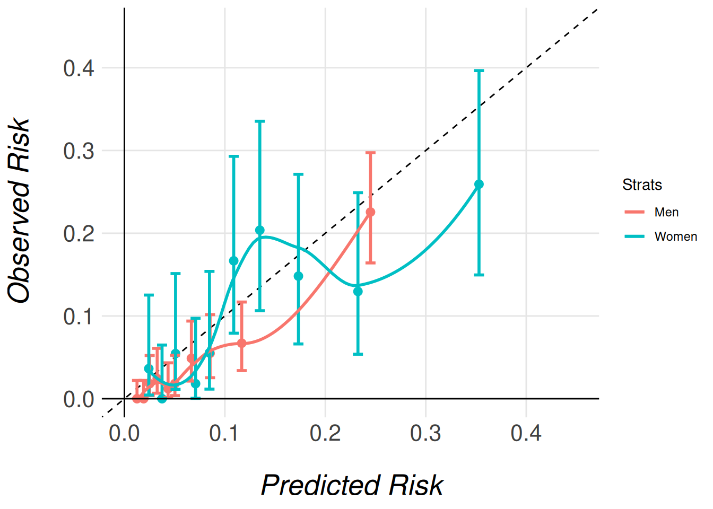
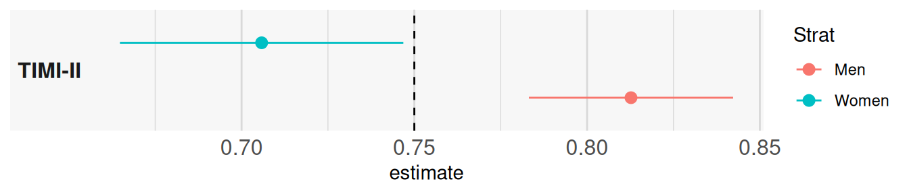

Required Libraries
The following code snippet lists all the libraries needed to run this report.
The MiceExtVal package is designed to facilitate the external validation of prediction models, particularly in clinical research settings. In this vignette, we illustrate its use by replicating a well-known example from Steyerberg (2019), presented in Chapter 20 of his book. Specifically, we demonstrate how to externally validate the TIMI-II model, originally developed by Mueller et al. (1992), using data from the Western region cohort of the GUSTO-I trial. This dataset is included in the package as MiceExtVal::gusto.
The TIMI-II model is a logistic regression model that predicts 42-day mortality in patients with acute myocardial infarction. Our aim is to assess the model’s performance in a new population—patients in the GUSTO-I Western region cohort, which provides only 30 days of follow-up. Through this example, users will learn how the MiceExtVal package supports the evaluation of model transportability and predictive accuracy across different clinical settings.
| Predictor | Coefficient |
|---|---|
| Shock | 1.79 |
| Age > 65 | 0.99 |
| High risk | 0.92 |
| Diabetes | 0.74 |
| Hypotension | 0.69 |
| Tachycardia | 0.59 |
| Time to relief | 0.53 |
| Sex | 0.47 |
| Intercept | -4.47 |
Explore the dataset
The first step in any data analysis or validation project is to become familiar with the dataset. The MiceExtVal package includes the GUSTO-I Western region dataset, which is also used in the example from Steyerberg (2019). To illustrate the use of multiple imputation — a key requirement of the package — we provide a modified version of the dataset with artificially introduced missing values. This setup allows users to work through a realistic example where incomplete data must be addressed.
Table 2 presents a descriptive summary of the dataset. Notably, the cohort includes nearly three times as many men as women. While most variables appear similar across sexes, there is a marked difference in mortality rates: \(11\%\) in women compared to \(4.7\%\) in men. This disparity may be partially explained by age, as \(57\%\) of the female patients are over \(65\) years old, compared to only \(32\%\) of the male patients. As previously mentioned, missing values are distributed across most variables in a similar pattern, and will need to be handled appropriately during the validation process.
gusto <- MiceExtVal::gusto |> dplyr::mutate(id = dplyr::row_number())
gusto |>
dplyr::mutate(
sex = dplyr::case_when(
sex == 0 ~ "Male", sex == 1 ~ "Female",
.default = as.character(sex)
)
) |>
dplyr::select(-id) |>
gtsummary::tbl_summary(
by = "sex",
missing_text = "% of missings",
missing_stat = "{p_miss}%"
)| Characteristic |
Female N = 5441 |
Male N = 1,6441 |
|---|---|---|
| Shock: Killip class 3/4 vs. 1/2 | 5 (1.0%) | 25 (1.6%) |
| % of missings | 7.9% | 6.3% |
| If the patient is older than 65 years old | 287 (57%) | 496 (32%) |
| % of missings | 8.1% | 6.9% |
| Diagnosed diabetes | 77 (15%) | 208 (14%) |
| % of missings | 6.4% | 6.4% |
| Categorized for high risk of Anterior Infart Location or Prevous Myocardial Infarction | 226 (46%) | 755 (49%) |
| % of missings | 8.8% | 6.6% |
| Hypotension: Systolic Blood Pressure < 100 mmHg | 63 (12%) | 133 (8.7%) |
| % of missings | 6.8% | 7.0% |
| Heart rate: Pulse>80 (Tachycardia) | 192 (38%) | 496 (32%) |
| % of missings | 7.4% | 6.9% |
| Time to relief of chest pain > 1h | 295 (59%) | 943 (62%) |
| % of missings | 8.8% | 7.1% |
| 30 day mortality | 58 (11%) | 77 (4.7%) |
| 1 n (%) | ||
Handling Missing Data
Although the main objective of this vignette is to demonstrate the use of the MiceExtVal package for external model validation, addressing missing data is a necessary step—and one that reflects best practices in clinical research. Multiple imputation is widely recommended as a statistically sound method for handling missing values, as it preserves power and reduces bias compared to simpler approaches like complete case analysis, Buuren (2018).
The MiceExtVal package is built to integrate seamlessly with workflows that use multiple imputation. In fact, all of its core functions expect the input data to be provided in long format, as produced by the mice package van Buuren & Groothuis-Oudshoorn (2011).
Below, we present a basic example using mice to perform multiple imputation. We first construct a predictor matrix, excluding the id variable, and then extract the imputed datasets in long format.
pred_matrix <- mice::make.predictorMatrix(gusto)
pred_matrix[, "id"] <- 0
gusto_imp <- mice::mice(gusto, predictorMatrix = pred_matrix, seed = 123) |>
mice::complete("long")The resulting object, gusto_imp, contains the multiply imputed datasets stacked in long format. This structure is required for proper functioning of the MiceExtVal package.
For a more comprehensive discussion on multiple imputation methodology and its practical application, we refer readers to Flexible Imputation of Missing Data by Buuren (2018), and to the original mice package paper by van Buuren & Groothuis-Oudshoorn (2011).
External Validation
Traditional external validation is typically performed on a single, complete dataset and involves several sequential steps. First, the original model is used to generate predictions for the new dataset. Then, the model’s performance is evaluated by assessing its discrimination (e.g., AUC) and calibration. If necessary, the model may be recalibrated, and performance metrics re-evaluated after adjustment.
However, when working with datasets containing missing values—especially in clinical research—multiple imputation is often used to preserve data integrity and avoid bias. As a result, we no longer have a single dataset, but multiple imputed versions of the original data, each representing a plausible completion. This complicates traditional validation workflows, since each imputed dataset yields different results that must be pooled appropriately.
The MiceExtVal package is designed to bridge this gap by streamlining the external validation process across multiple imputed datasets. It allows users to perform all validation steps—including prediction, performance evaluation, and optional recalibration while properly handling the variability introduced by imputation.
Having completed the imputation in the previous section, we are now ready to externally validate the TIMI-II model using MiceExtVal. Since TIMI-II is a logistic regression model, we begin by defining it with the MiceExtVal::mv_model_logreg() function. This function requires a formula specifying the model’s coefficients and intercept. It is essential that all variables included in the formula are present in the imputed dataset; otherwise, subsequent functions will raise an error.
timi2_model <- MiceExtVal::mv_model_logreg(
formula = day30 ~ 1.79 * sho + 0.99 * a65 + 0.92 * hig + 0.74 * dia +
0.69 * hyp + 0.59 * hrt + 0.53 * ttr + 0.47 * sex - 4.47
)Once the model is defined using MiceExtVal::mv_model_logreg(), the resulting object—stored in timi2_model—contains both the model formula and the structural skeleton needed for subsequent steps. Most functions in the MiceExtVal package take this model object as input and return an updated version with additional components, such as predictions or performance metrics. These functions follow a consistent naming convention: those that modify the model object begin with the prefix calculate_.
The first step in the external validation process is to compute the model’s original predictions on the external dataset. To do this, the package provides the MiceExtVal::calculate_predictions() function. This function requires two arguments: the model object (e.g., timi2_model) and the imputed dataset in long format (e.g., gusto_imp). It returns the same model object with the predicted probabilities added, ready for subsequent validation steps.
timi2_model <- timi2_model |>
MiceExtVal::calculate_predictions(gusto_imp)After executing MiceExtVal::calculate_predictions(), the model object is updated with additional information derived from the imputed dataset. Specifically, the predicted probabilities are computed for each imputation and stored within the model. In addition, the function calculates aggregated predictions for each patient by pooling results across imputations. An example of these values are shown in Table 3.
Beyond the predicted probabilities, the model object also includes the linear predictors (\(\beta \cdot X\)), both at the individual imputation level and as pooled estimates. These represent the raw score from the logistic regression model before applying the inverse logit transformation. Table 4 presents these values.
This structure—where all relevant prediction outputs are integrated into the model object—allows for a streamlined workflow in which subsequent steps like performance evaluation or recalibration can be carried out with minimal additional input.
timi2_model$predictions_aggregated |>
utils::head() |>
kableExtra::kbl()
timi2_model$predictions_data |>
utils::head() |>
kableExtra::kbl()| id | prediction |
|---|---|
| 1 | 0.1160889 |
| 2 | 0.0650227 |
| 3 | 0.0202330 |
| 4 | 0.0816603 |
| 5 | 0.0373269 |
| 6 | 0.0407286 |
| prediction | .imp | id |
|---|---|---|
| 0.1160889 | 1 | 1 |
| 0.0567862 | 1 | 2 |
| 0.0202330 | 1 | 3 |
| 0.0816603 | 1 | 4 |
| 0.0373269 | 1 | 5 |
| 0.0492660 | 1 | 6 |
timi2_model$betax |>
utils::head() |>
kableExtra::kbl()
timi2_model$betax_data |>
utils::head() |>
kableExtra::kbl()| id | betax |
|---|---|
| 1 | -2.030 |
| 2 | -2.692 |
| 3 | -3.880 |
| 4 | -2.420 |
| 5 | -3.250 |
| 6 | -3.196 |
| betax | .imp | id |
|---|---|---|
| -2.03 | 1 | 1 |
| -2.81 | 1 | 2 |
| -3.88 | 1 | 3 |
| -2.42 | 1 | 4 |
| -3.25 | 1 | 5 |
| -2.96 | 1 | 6 |
Performance Assessment
Once the model predictions have been calculated, we can proceed to assess the model’s performance on the external cohort. The first aspect of performance we evaluate is discrimination, which reflects the model’s ability to distinguish between patients who experienced the event and those who did not.
The MiceExtVal package provides two functions to assess discrimination: MiceExtVal::calculate_auc() and MiceExtVal::calculate_harrell_c_index(). The former computes the Area Under the Receiver Operating Characteristic Curve (AUC), which is appropriate for binary outcomes. The latter calculates Harrell’s C-index, which is typically used for survival data.
Since our outcome is binary (death within 30 days), we will use AUC as our measure of discrimination in this example.
timi2_model <- timi2_model |>
MiceExtVal::calculate_auc(gusto_imp)
auc_res <- sprintf(
"%.3f (95%% CI %.3f, %.3f)",
timi2_model$auc["Estimate"],
timi2_model$auc["95% CI L"],
timi2_model$auc["95% CI U"]
)The model yields an AUC of 0.797 (95% CI 0.775, 0.819), which indicates a fairly good level of discrimination. As a second key component of model performance, we now assess calibration, which evaluates how closely the predicted probabilities agree with the observed outcomes.
Calibration is most commonly visualized using a calibration plot. In the MiceExtVal package, generating this plot is a two-step process: first, the calibration data must be computed; then, the plot itself can be created.
To compute the calibration data, the package provides two functions:
-
MiceExtVal::get_calibration_plot_data_prop()estimates the observed risks using outcome proportions. -
MiceExtVal::get_calibration_plot_data_surv()estimates observed risks using a Kaplan–Meier approach (for survival outcomes).
Since we are validating a logistic regression model with a binary outcome, we use MiceExtVal::get_calibration_plot_data_prop().
In the code snippet below, we generate a calibration plot for the TIMI-II model. We use MiceExtVal::get_calibration_plot_data_prop() to compute the calibration data, followed by MiceExtVal::get_calibration_plot() to create the plot itself. The plot is generated using the ggplot2 package, allowing for full customization. In this example, we also apply a custom function, clip_axis_plot(), to adjust the plot limits.
clip_axis_plot <- function(plot, limit = 1) {
plot +
ggplot2::xlim(c(0, limit)) +
ggplot2::ylim(c(0, limit))
}
timi2_model |>
MiceExtVal::get_calibration_plot_data_prop(
data = gusto_imp,
n_groups = 10,
type = "predictions_aggregated"
) |>
MiceExtVal::get_calibration_plot() |>
clip_axis_plot(limit = 0.35)In Figure Figure 1, we observe a well-calibrated model: the predicted risks align closely with the observed outcomes across most deciles of risk. In practice, this level of agreement may be considered sufficient, and no further recalibration would be necessary.
Another way of measuring the accuracy of the predictions of the model to the observed risk is the Brier score. This score is calculated following
\[ BS = \frac{1}{N}\sum^N_{t = 1}(f_t - o_t)^2 \]
where \(N\) is the size of the population, \(f_t\) is the model prediction for the patient \(t\) and \(o_t\) is the observed risk for the patient \(t\) in this case \(0\) if they suffer no event and \(1\) otherwise. In the MiceExtVal package we have developed the function MiceExtVal::calculate_brier_score that help users to calculate the model brier score.
timi2_model <- timi2_model |>
MiceExtVal::calculate_brier_score(
data = gusto_imp, type = "predictions_aggregated", n_boot = 100
)
brier_score_res <- sprintf(
"%.3f (95%% CI %.3f, %.3f)",
timi2_model$brier_score["Estimate"],
timi2_model$brier_score["95% CI L"],
timi2_model$brier_score["95% CI U"]
)The model yields an AUC of 0.052 (95% CI 0.045, 0.059) that demonstrait a fair accuracy between the model predictions and the observed risks. However, to fully demonstrate the functionality of the MiceExtVal package, we will proceed with recalibrating the model predictions. This allows us to show how recalibration can be implemented when needed and how it affects the model’s performance.
Model Recalibration
The MiceExtVal package provides two distinct functions to perform recalibration of model predictions:
MiceExtVal::calculate_predictions_recalibrated_type_1()MiceExtVal::calculate_predictions_recalibrated_type_2()
These functions apply two different recalibration strategies. Importantly, Type 1 and Type 2 recalibrations are independent approaches. They are not sequential steps nor refinements of one another, but alternative methods to adjust predicted risks based on the external dataset.
After recalibration, we reassess model calibration using updated calibration plots. However, we do not recalculate the AUC, since recalibration modifies the predicted probabilities but does not affect the model’s ability to rank individuals, and thus has no impact on discrimination.
timi2_model <- timi2_model |>
MiceExtVal::calculate_predictions_recalibrated_type_1(gusto_imp) |>
MiceExtVal::calculate_predictions_recalibrated_type_2(gusto_imp)In the previous code snippet, both types of recalibrated predictions were computed simultaneously and stored within the model object. These recalibrated predictions are provided as aggregated values, meaning that each patient receives a single recalibrated risk estimate, pooled across the multiple imputations. The resulting predictions can be seen in Table 5.
In addition to the recalibrated predictions, the corresponding recalibration parameters—such as intercept and slope adjustments—are also saved within the model object. This design ensures that all relevant recalibration outputs are centralized and accessible for further analysis or reporting.
timi2_model$predictions_recal_type_1 |>
utils::head() |>
kableExtra::kbl()
timi2_model$predictions_recal_type_2 |>
utils::head() |>
kableExtra::kbl()| id | prediction_type_1 |
|---|---|
| 1 | 0.0835158 |
| 2 | 0.0448944 |
| 3 | 0.0141260 |
| 4 | 0.0581123 |
| 5 | 0.0261984 |
| 6 | 0.0276119 |
| id | prediction_type_2 |
|---|---|
| 1 | 0.0828035 |
| 2 | 0.0418574 |
| 3 | 0.0117352 |
| 4 | 0.0555939 |
| 5 | 0.0231448 |
| 6 | 0.0245219 |
The recalibration parameters obtained for this model are:
- Type 1 recalibration: \(\alpha_{\text{type1}} = -0.366\)
- Type 2 recalibration: \(\alpha_{\text{type2}} = -0.179, \beta_{\text{overall}} = 1.096\)
These parameters are automatically stored in the model object after recalibration. If you would like more details about how these recalibrated predictions are computed, please refer to the documentation for each function.
As mentioned earlier, recalibration does not affect model discrimination. This is because all predictions are shifted or scaled uniformly, preserving the model’s ability to rank individuals. However, recalibration does affect model calibration, since the predictions are explicitly adjusted to better reflect the observed outcome frequencies in the external cohort.
To visualize the effect of recalibration, we generate calibration plots using the same plotting functions introduced earlier. The only difference is specifying the type of recalibrated predictions we wish to plot. The following code snippet demonstrates how to generate calibration plots for both Type 1 and Type 2 recalibrated predictions.
timi2_model |>
MiceExtVal::get_calibration_plot_data_prop(
data = gusto_imp,
n_groups = 10,
type = "predictions_recal_type_1"
) |>
MiceExtVal::get_calibration_plot() |>
clip_axis_plot(limit = 0.35)
timi2_model |>
MiceExtVal::get_calibration_plot_data_prop(
data = gusto_imp,
n_groups = 10,
type = "predictions_recal_type_2"
) |>
MiceExtVal::get_calibration_plot() |>
clip_axis_plot(limit = 0.35)

Even though the AUC does not change with the model recalibration the Brier score does change. The predictions should be more accurate to the observed risk after this recalibrations and therefore we should obtain better Brier scores.
timi2_model <- timi2_model |>
MiceExtVal::calculate_brier_score(
data = gusto_imp, type = "predictions_recal_type_1", n_boot = 100
) |>
MiceExtVal::calculate_brier_score(
data = gusto_imp, type = "predictions_recal_type_2", n_boot = 100
)
brier_score_type_1_res <- sprintf(
"%.3f (95%% CI %.3f, %.3f)",
timi2_model$brier_score_type_1["Estimate"],
timi2_model$brier_score_type_1["95% CI L"],
timi2_model$brier_score_type_1["95% CI U"]
)
brier_score_type_2_res <- sprintf(
"%.3f (95%% CI %.3f, %.3f)",
timi2_model$brier_score_type_2["Estimate"],
timi2_model$brier_score_type_2["95% CI L"],
timi2_model$brier_score_type_2["95% CI U"]
)The model obtains a Brier score of 0.051 (95% CI 0.044, 0.058) for the type 1 recalibration and 0.052 (95% CI 0.045, 0.060) for the type 2 recalibration technique. The results are pretty similar to the original model predictions Brier score 0.052 (95% CI 0.045, 0.059). This results are aligned to the good calibration of the original model predictions.
Comparing models
External validation is often performed not only to assess the performance of a single model, but also to compare multiple models within the same external cohort. This comparison can help determine which model performs best overall or within specific subgroups of interest.
In the previous sections, we demonstrated how to externally validate a single model using the MiceExtVal package. However, the package also includes functionality to facilitate comparisons between models, whether they differ in structure or are applied to different subgroups.
As an example, in this section we stratify the validation of the TIMI-II model by gender, comparing its performance separately for men and women patients. To do this, we need to define two distinct model objects—one for men and one for women. Although both models share the same formula, they must be created separately to allow storage and comparison of their respective results.
timi2_model_men <- MiceExtVal::mv_model_logreg(
formula = day30 ~ 1.79 * sho + 0.99 * a65 + 0.92 * hig + 0.74 * dia +
0.69 * hyp + 0.59 * hrt + 0.53 * ttr + 0.47 * sex - 4.47
)
timi2_model_women <- MiceExtVal::mv_model_logreg(
formula = day30 ~ 1.79 * sho + 0.99 * a65 + 0.92 * hig + 0.74 * dia +
0.69 * hyp + 0.59 * hrt + 0.53 * ttr + 0.47 * sex - 4.47
)We also need to stratify the cohort by sex in order to use this subcohorts as parameters for the prediction calculations.
With the stratified cohorts and models defined, we can now calculate the performance results for each group. It is important to note that each model is evaluated using the corresponding subcohort. Specifically, the model timi2_model_men will only store and evaluate results from the gusto_imp_men subcohort, which includes only men patients. Similarly, the model for women will evaluate only the data from the gusto_imp_women subcohort. This ensures that the models are validated on the appropriate subset of the cohort, allowing for a fair comparison of performance between the genders.
timi2_model_men <- timi2_model_men |>
MiceExtVal::calculate_predictions(gusto_imp_men) |>
MiceExtVal::calculate_predictions_recalibrated_type_1(gusto_imp_men) |>
MiceExtVal::calculate_predictions_recalibrated_type_2(gusto_imp_men) |>
MiceExtVal::calculate_auc(gusto_imp_men) |>
MiceExtVal::calculate_brier_score(
data = gusto_imp_men, type = "predictions_aggregated", n_boot = 100
) |>
MiceExtVal::calculate_brier_score(
data = gusto_imp_men, type = "predictions_recal_type_1", n_boot = 100
) |>
MiceExtVal::calculate_brier_score(
data = gusto_imp_men, type = "predictions_recal_type_2", n_boot = 100
)
timi2_model_women <- timi2_model_women |>
MiceExtVal::calculate_predictions(gusto_imp_women) |>
MiceExtVal::calculate_predictions_recalibrated_type_1(gusto_imp_women) |>
MiceExtVal::calculate_predictions_recalibrated_type_2(gusto_imp_women) |>
MiceExtVal::calculate_auc(gusto_imp_women) |>
MiceExtVal::calculate_brier_score(
data = gusto_imp_women, type = "predictions_aggregated", n_boot = 100
) |>
MiceExtVal::calculate_brier_score(
data = gusto_imp_women, type = "predictions_recal_type_1", n_boot = 100
) |>
MiceExtVal::calculate_brier_score(
data = gusto_imp_women, type = "predictions_recal_type_2", n_boot = 100
)Calibration Comparison: Stratified Calibration Plots
Once the results from both stratified models are stored, we can begin comparing the model performances. A useful starting point is to compare the calibration plots for the different subgroups. Similar to individual calibration plots, we have two functions depending on how we want to estimate the observed risks:
-
MiceExtVal::get_stratified_calibration_plot_prop()for estimating observed risks using outcome proportions. -
MiceExtVal::get_stratified_calibration_plot_surv()for estimating risks using a Kaplan–Meier approach (typically for survival data).
For our case, since we are working with a binary outcome and stratifying by sex, we only need to use MiceExtVal::get_stratified_calibration_plot_prop().
To generate the stratified calibration plot, you’ll need to pass several arguments to the function:
- The external validation data (e.g.,
gusto_imp) - The number of groups
- The type of prediction (either recalibrated or original predictions)
- A list of models to compare (in this case,
timi2_model_menandtimi2_model_women).
This will allow the function to overlay calibration plots for both models on the same figure, facilitating direct comparison.
#|
MiceExtVal::get_stratified_calibration_plot_prop(
data = gusto_imp,
n_groups = 10,
type = "predictions_aggregated",
Men = timi2_model_men,
Women = timi2_model_women
) |>
clip_axis_plot(limit = 0.45)
MiceExtVal::get_stratified_calibration_plot_prop(
data = gusto_imp,
n_groups = 10,
type = "predictions_recal_type_1",
Men = timi2_model_men,
Women = timi2_model_women
) |>
clip_axis_plot(limit = 0.45)
MiceExtVal::get_stratified_calibration_plot_prop(
data = gusto_imp,
n_groups = 10,
type = "predictions_recal_type_2",
Men = timi2_model_men,
Women = timi2_model_women
) |>
clip_axis_plot(limit = 0.45)

Note that we pass the entire imputed dataset (gusto_imp) as an argument, even though each model only stores the results for its respective subcohort (men or women). This is necessary because the function needs access to the full dataset in order to correctly extract and process the relevant subcohort for each model. The function then uses the subcohort specified for each model (e.g., gusto_imp_men for men) to calculate the appropriate calibration data and generate the corresponding calibration plots.
By passing the complete dataset, the function ensures that the stratified calibration plots are generated correctly, comparing the models’ calibration in the context of the full cohort’s distribution of characteristics.
Discrimination Comparison: Forestplot
The MiceExtVal package also includes functionality for generating a forest plot to compare the discrimination abilities of different models. In this example, we will visualize the AUC (Area Under the Curve), but the package also allows for the comparison of the Harrell C-Index in survival outcomes.
The forest plot generation process is split into two steps:
- Data preparation: The first step generates the data that will be used in the forest plot.
- Forest plot creation: The second step generates the actual plot from the prepared data.
To compare different models, we can stratify the results by binding data from different subgroups (e.g., men and women patients). Models that share the same name across subgroups will be merged in the final forest plot, making it easy to compare the performance of the same model in different groups.
In the following example, we generate two separate strata for the same model, TIMI-II, one for men and one for women, and then we pass these strata to the forest plot function.
dplyr::bind_rows(
MiceExtVal::get_forestplot_data(strat = "Men", type = "auc", `TIMI-II` = timi2_model_men),
MiceExtVal::get_forestplot_data(strat = "Women", type = "auc", `TIMI-II` = timi2_model_women)
) |>
MiceExtVal::get_forestplot(center = 0.75)
In the following example, we generate a single strat, labeled Overall, that combines the data from both models, one for men and one for women. This allows us to compare the performance of the two stratified models in a single forest plot.
Note that we have removed the legend from the plot, as we only have one strat. Since the legend would be redundant in this case, we have opted to exclude it. It’s worth noting that, as with any other ggplot2 plot, the forest plot can be further customized. You can modify it in any way, such as by reintroducing the legend, adjusting colors, or tweaking other visual elements to fit your needs.
fp <- MiceExtVal::get_forestplot_data(
strat = "Overall", type = "auc",
`TIMI-II Men` = timi2_model_men, `TIMI-II Women` = timi2_model_women
) |>
MiceExtVal::get_forestplot(center = 0.75, digits = 2, table = TRUE)
fp[[2]] <- fp[[2]] +
ggplot2::theme(legend.position = "none")
plot(fp)Finally, both concepts can be combined to generate a forest plot that compares multiple models across multiple strata. The following example demonstrates how to compare the general model with its stratified validation, allowing a side-by-side comparison of model performance across different subgroups and the overall cohort.
dplyr::bind_rows(
MiceExtVal::get_forestplot_data(
strat = "Overall", type = "auc",
`TIMI-II` = timi2_model
),
MiceExtVal::get_forestplot_data(
strat = "Men", type = "auc", `TIMI-II strat` = timi2_model_men
),
MiceExtVal::get_forestplot_data(
strat = "Women", type = "auc", `TIMI-II strat` = timi2_model_women
),
) |>
MiceExtVal::get_forestplot(center = 0.75, digits = 2, table = TRUE)Brier Score Comparison: Forestplot
The forestplot functions also allow us to generate the data from the Brier score results. The next code snippet generates a forestplot that compares the different Brier score in each model.
data <- dplyr::bind_rows(
MiceExtVal::get_forestplot_data(
strat = "Original", type = "brier_score",
Men = timi2_model_men, Women = timi2_model_women
),
MiceExtVal::get_forestplot_data(
strat = "Type 1 recalibration", type = "brier_score_type_1",
Men = timi2_model_men, Women = timi2_model_women
),
MiceExtVal::get_forestplot_data(
strat = "Type 2 recalibration", type = "brier_score_type_2",
Men = timi2_model_men, Women = timi2_model_women
),
)
data |>
MiceExtVal::get_forestplot(center = mean(data[["estimate"]]), digit = 2, table = TRUE)